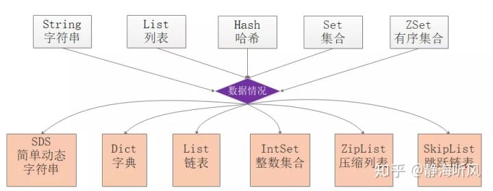
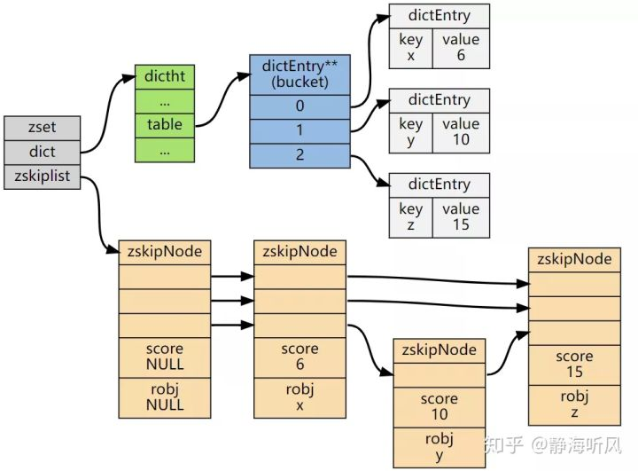
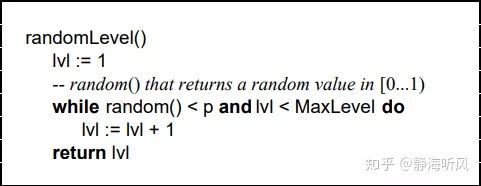
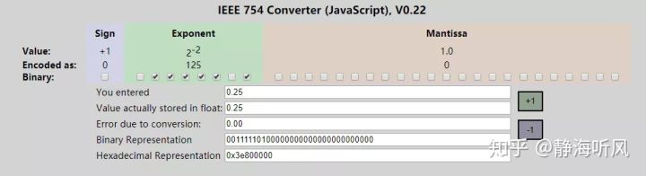
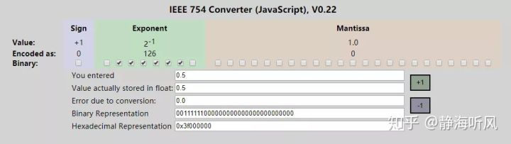
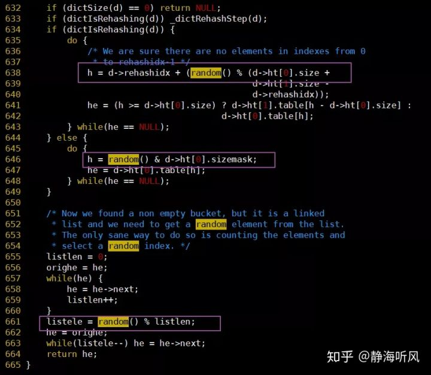
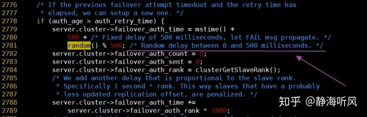
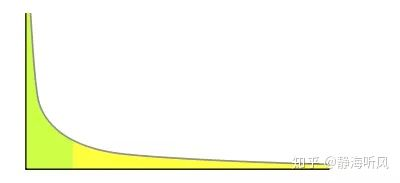
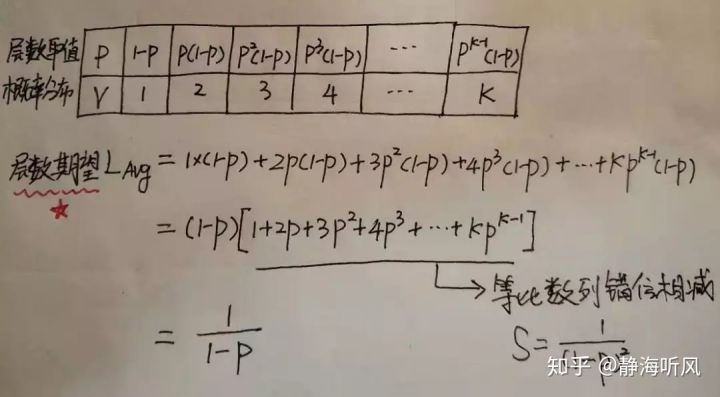

原文连接:https://www.cnblogs.com/backnullptr/p/12015242.html
0.前言
前面写了一篇关于跳表基本原理和特性的文章，本次继续介绍跳表的概率平衡和工程实现，跳表在Redis、LevelDB、ES中都有应用，本文以Redis为工程蓝本，分析跳表在Redis中的工程实现。
通过本文你将了解到以下内容：
- Redis基本的数据类型和底层数据结构
- Redis的有序集合的实现方法
- Redis的跳表实现细节
1.Redis的数据结构
Redis对外共有约五种类型的对象：
- 字符串（String）
- 列表（List）
- 哈希（Hash）
- 集合（Set）
- 有序集合（SortedSet）
redis源码文件src/server.h中对于5种结构的定义：

1 /* The actual Redis Object */
2 #define OBJ_STRING 0 /* String object. */
3 #define OBJ_LIST 1 /* List object. */
4 #define OBJ_SET 2 /* Set object. */
5 #define OBJ_ZSET 3 /* Sorted set object. */
6 #define OBJ_HASH 4 /* Hash object. */Redis对象由redisObject结构体表示，从src/server.h可以看到该结构的定义如下：
1 typedef struct redisObject {
2 unsigned type:4;
3 unsigned encoding:4;
4 unsigned lru:LRU_BITS;
5 int refcount;
6 void *ptr;
7 } robj;redisObject明确了对象类型、对象编码方式、过期设置、引用计数、内存指针等，从而完整表示一个key-value键值对。
由于Redis是基于内存的，Antirez在实现这5种数据类型时在底层创建了多种数据结构，在对象底层选择采用哪种结构来实现，需要根据对象大小以及单个元素大小来进行确定，从而提高空间使用率和效率。
如图展示了Redis对外使用的数据类型和底层的数据结构：

有序集合对象的编码可以是ziplist或者skiplist，在元素小于128并且元素长度小于64Byte时才会选择压缩列表实现，一般使用skiplist跳表实现。
2.Redis的ZSet
ZSet结构同时包含一个字典和一个跳跃表，跳跃表按score从小到大保存所有集合元素。
字典保存着从member到score的映射。这两种结构通过指针共享相同元素的member和score，不会浪费额外内存。
1 typedef struct zset {
2 dict *dict;
3 zskiplist *zsl;
4 } zset;ZSet中的字典和跳表布局：

注:图片源自网络
3.ZSet中跳表的实现细节
- 随机层数的实现原理
跳表是一个概率型的数据结构，元素的插入层数是随机指定的。Willam Pugh在论文中描述了它的计算过程如下：
- 指定节点最大层数 MaxLevel，指定概率 p， 默认层数 lvl 为1
- 生成一个0~1的随机数r，若r<p，且lvl<MaxLevel ，则lvl ++
- 重复第 2 步，直至生成的r >p 为止，此时的 lvl 就是要插入的层数。
论文中生成随机层数的伪码：

论文中关于随机层数的伪码
在Redis中对跳表的实现基本上也是遵循这个思想的，只不过有微小差异，看下Redis关于跳表层数的随机源码src/z_set.c：
1 /* Returns a random level for the new skiplist node we are going to create.
2 * The return value of this function is between 1 and ZSKIPLIST_MAXLEVEL
3 * (both inclusive), with a powerlaw-alike distribution where higher
4 * levels are less likely to be returned. */
5 int zslRandomLevel(void) {
6 int level = 1;
7 while ((random()&0xFFFF) < (ZSKIPLIST_P * 0xFFFF))
8 level += 1;
9 return (level<ZSKIPLIST_MAXLEVEL) ? level : ZSKIPLIST_MAXLEVEL;
10 }其中两个宏的定义在redis.h中：
1 #define ZSKIPLIST_MAXLEVEL 32 /* Should be enough for 2^32 elements */
2 #define ZSKIPLIST_P 0.25 /* Skiplist P = 1/4 */可以看到while中的：
1 (random()&0xFFFF) < (ZSKIPLIST_P*0xFFFF)第一眼看到这个公式，因为涉及位运算有些诧异，需要研究一下Antirez为什么使用位运算来这么写？
最开始的猜测是random()返回的是浮点数[0-1]，于是乎在线找了个浮点数转二进制的工具，输入0.25看了下结果：

可以看到0.25的32bit转换16进制结果为0x3e800000，如果与0xFFFF做与运算结果是0，好像也符合预期，再试一个0.5:

可以看到0.5的32bit转换16进制结果为0x3f000000，如果与0xFFFF做与运算结果还是0，不符合预期。
我印象中C语言的math库好像并没有直接random函数，所以就去Redis源码中找找看，于是下载了3.2版本代码，也并没有找到random()的实现，不过找到了其他几个地方的应用：
- random()在dict.c中的使用：

- random()在cluster.c中的使用：

看到这里的取模运算，后知后觉地发现原以为random()是个[0-1]的浮点数，但是现在看来是uint32才对，这样Antirez的式子就好理解了。
由于ZSKIPLIST_P=0.25，所以相当于0xFFFF右移2位变为0x3FFF，假设random()比较均匀，
在进行0xFFFF与运算之后高16位清零之后，低16位取值就落在0x0000-0xFFFF之间，这样while为真的概率只有1/4，更一般地说为真的概率为1/ZSKIPLIST_P。
对于随机层数的实现并不统一，重要的是随机数的生成，在LevelDB中对跳表层数的生成代码是这样的：
1 template <typename Key, typename Value>
2 int SkipList<Key, Value>::randomLevel() {
3
4 static const unsigned int kBranching = 4;
5 int height = 1;
6 while (height < kMaxLevel && ((::Next(rnd_) % kBranching) == 0)) {
7 height++;
8 }
9 assert(height > 0);
10 assert(height <= kMaxLevel);
11 return height;
12 }
13
14 uint32_t Next( uint32_t& seed) {
15 seed = seed & 0x7fffffffu;
16
17 if (seed == 0 || seed == 2147483647L) {
18 seed = 1;
19 }
20 static const uint32_t M = 2147483647L;
21 static const uint64_t A = 16807;
22 uint64_t product = seed * A;
23 seed = static_cast<uint32_t>((product >> 31) + (product & M));
24 if (seed > M) {
25 seed -= M;
26 }
27 return seed;
28 }可以看到leveldb使用随机数与kBranching取模，如果值为0就增加一层，这样虽然没有使用浮点数，但是也实现了概率平衡。
- 跳表结点的平均层数
我们很容易看出，产生越高的节点层数出现概率越低，无论如何层数总是满足幂次定律越大的数出现的概率越小。
幂次定律：如果某件事的发生频率和它的某个属性成幂关系，那么这个频率就可以称之为符合幂次定律。幂次定律的表现是少数几个事件的发生频率占了整个发生频率的大部分， 而其余的大多数事件只占整个发生频率的一个小部分。

幂次定律应用到跳表的随机层数来说就是大部分的节点层数都是黄色部分，只有少数是绿色部分，并且概率很低。
定量的分析如下：
- 节点层数至少为1，大于1的节点层数满足一个概率分布。
- 节点层数恰好等于1的概率为p^0(1-p)。
- 节点层数恰好等于2的概率为p^1(1-p)。
- 节点层数恰好等于3的概率为p^2(1-p)。
- 节点层数恰好等于4的概率为p^3(1-p)。
- 依次递推节点层数恰好等于K的概率为p^(k-1)(1-p)
因此如果我们要求节点的平均层数，那么也就转换成了求概率分布的期望问题了，灵魂画手大白再次上线：

表中P为概率，V为对应取值，给出了所有取值和概率的可能，因此就可以求这个概率分布的期望了。
方括号里面的式子其实就是高一年级学的等比数列，常用技巧错位相减求和，从中可以看到结点层数的期望值与1-p成反比。
对于Redis而言，当p=0.25时结点层数的期望是1.33。
小结：在Redis源码中有详尽的关于插入和删除调整跳表的过程，本文就不再展开了，代码并不算难懂，都是纯C写的没有那么多炫技的特效，放心大胆读起来。
4.参考资料
- http://note.huangz.me/algorithm/arithmetic/power-law.html
- https://juejin.im/post/5cb885a8f265da03973aa8a1
- https://epaperpress.com/sortsearch/download/skiplist.pdf
- https://www.h-schmidt.net/FloatConverter/IEEE754.html
- http://www.ruanyifeng.com/blog/2010/06/ieee_floating-point_representation.html
- https://cyningsun.github.io/06-18-2018/skiplist.html